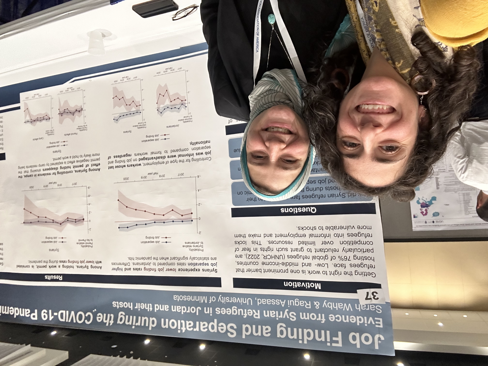
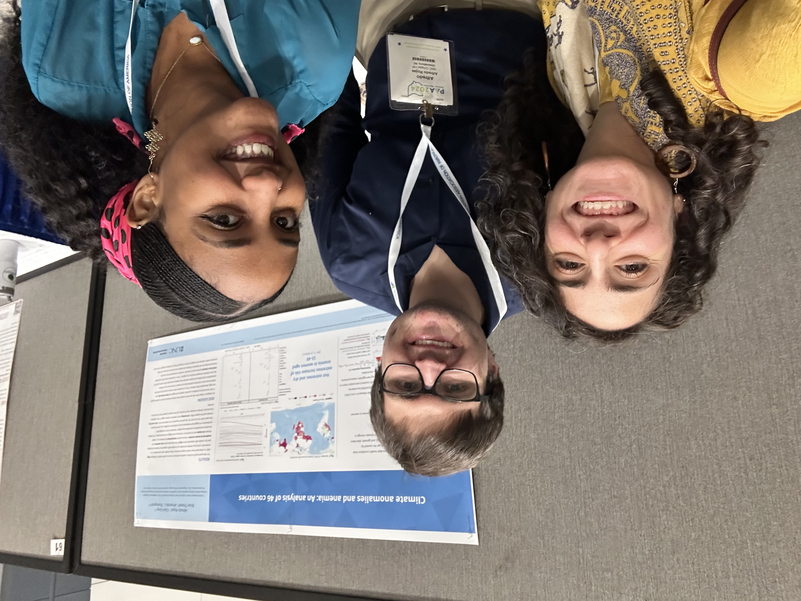
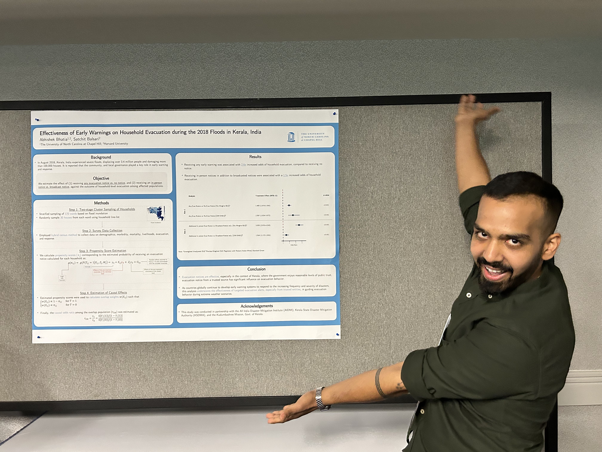
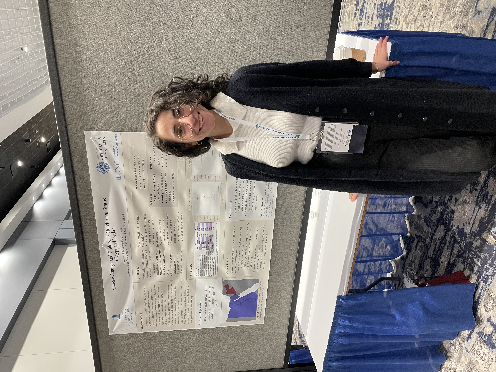

Academic Year 2024–2025
Meetings, presentations, and group activities
SWANA POP at PAA 2025
SWANA POP members presented research across a range of topics at the 2025 Population Association of America Annual Meeting.
- Abhishek Bhatia — Patient Addresses in Electronic Health Records: New Source of Data on Spatial Mobility? (Oral)
- Mary Abed Al Ahad — The Timing of Critical Life Events Across Generations and Origin of Descendants of Immigrants in Sweden: Which Comes First, Homeownership, Marriage, or Childbirth? (Poster)
- Mary Abed Al Ahad — Homeownership, Marriage, and Childbirth Trajectories Across the Life Course of Descendants of Immigrants in Sweden: A Multilevel Multistate Event History Approach (Poster)
- Jasmin Abdel Ghany — Prenatal Exposure to Extreme Heat and Infant Mortality: Evidence From Mali (Oral)
- Georgina Gemayel — Reproductive Autonomy in the Face of Changing Temperature and Precipitation: A Case Study of Egypt and Jordan (Oral)
- Katharina Klaunig — The Differential Roles of Migration Exposures in the Timing of Migration (Oral)
- Alfredo Rojas — Climate and Anemia in Reproductive-Age Women in Low- and Middle-Income Countries (Oral)
- Alfredo Rojas / Georgina Gemayel — Childhood Anemia in a Changing Climate (Poster)
- Goleen Samari — Women’s Empowerment and Socioeconomic Development (Invited Session)
- Fatima Touma — Immigrant Generation and Racial/Ethnic Trajectories of Self-rated Health and Depressive Symptomology From Adolescence to Early Midlife in the United States (Oral)
- Sarah Wahby — The Nexus of Climate Change, Migration, and Conflict in Sudan (Poster)




Academic Year 2024–2025 Member Meetings
During the academic year, SWANA POP members met to share research, discuss work in progress, and connect around common interests and research goals.